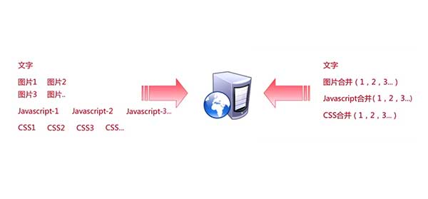
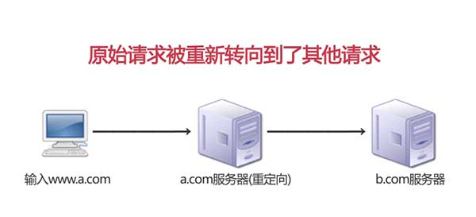

Yahoo 前端性能优化军规
本文介绍的是非常基础的传统前端优化策略
14 条常用优化规则
减少 HTTP 请求
- 合并文件：通过把尽量多的脚本文件放在一个文件中的方式来减少请求数，当然，css 文件也可以这样。
- CSS Sprites：减少图片请求数量的首选方式。把背景图片都整合到一张图片中，然后用 CSS 的 background-image 和 background-position 属性来定位要显示的部分。
- 行内图片（Base64 编码）：用 data: URL 模式来把图片嵌入页面。把图像文件的内容直接写在了 HTML 文件中，这样做的好处是，节省了一个 HTTP 请求。坏处是浏览器不会缓存这种图像。

使用内容分发网络 CDN
- 把内容部署在多个地理位置分散的服务器上能让用户更快地载入页面。
- 典型地，选择用来发送内容的服务器是基于网络距离的衡量标准的。例如：选跳数（hop）最少的或者响应时间最快的服务器。
Expires 或 cache-Control
- 对于静态内容：设置文件头过期时间 Expires 的值为几个月或者“Never expire”
- 对于动态内容：使用恰当的 cache-Control 文件头来帮助浏览器进行有条件的请求
Gzip 压缩
从 HTTP/1.1 开始，web 客户端就有了支持压缩的 Accept-Encoding HTTP 请求头。
1 | Accept-Encoding: gzip, deflate |
如果 web 服务器看到这个请求头，它就会用客户端列出的一种方式来压缩响应。
把样式表置于顶部
避免页面闪烁
把脚本放在底部
可以使用 defer 和 async 属性，但为了避免兼容性问题，还是将 js 文件放置在底部较为合适
剔除重复脚本
避免使用 css 表达式
IE5 及其以后版本支持在 CSS 中使用 expression，用来把 CSS 属性和 Javascript 脚本关联起来，这里的 CSS 属性可以是元素固有的属性，也可以是自定义属性。
计算频率极高，性能极低。
使用外部 js、css 文件
在样本或样式较少时，还是推荐直接写在页面中，避免文件系统的混乱。
压缩 JavaScript 和 CSS
在上线项目，进行生产环境部署时，对相关文件进行压缩，是线上版本最轻量。
减少 DNS 查找
- 域名系统 DNS 建立了主机名和 IP 地址间的映射。
- DNS 查找被缓存起来更高效，由用户的 ISP（网络服务提供商）或者本地网络存在一个特殊的缓存服务器上，但还可以缓存在个人用户的计算机上。
- 只要浏览器在自己的 cache 里还保留着这条记录，它就不会向操作系统查询 DNS。
避免重定向
在 HTTP 协议中，重定向用 301 和 302 状态码。
- 301 是永久重定向
- 302 是临时重定向
用重定向来连接两个网站是最简单的，只需要少量的额外代码。虽然在这些时候使用重定向减少了开发人员的开发复杂度，但降低了用户体验。一种替代方案是用 Alias 和 mod_rewrite，前提是两个代码路径都在相同的服务器上。如果是因为域名变化而使用了重定向，就可以创建一条 CNAME 指令。

ETag
- 实体标签 Entity Tag，服务器和浏览器用来决定浏览器缓存中组件与源服务器中的组件是否匹配的一种机制。即用一个字符串来标识一个资源的版本。
- 添加 ETags 可以提供一种实体验证机制，比最后修改日期更加灵活。
使用 Ajax 缓存
异步 JavaScript 和 XML
我们进行一次 AJAX 请求后，把资源进行缓存。
YSlow
- YSlow 可以对网站的页面进行分析，并告诉你为了提高网站性能，如何基于某些规则而进行优化。
- YSlow 可以分析任何网站，并为每一个规则产生一个整体报告，如果页面可以进行优化，则 YSlow 会列出具体的修改意见。
- YSlow 针对不同的浏览器插件也是不同的。可以查阅官网的完全文档。
- 点击 YSlow 按钮，启动插件，点击 Run Test 测试当前页面。在新弹出的界面中按照重要性显示了影响此页面效率的元素，其中 A 类评分为最高，F 为最低。


如果长时间无法加载，请针对 disq.us | disquscdn.com | disqus.com 启用代理